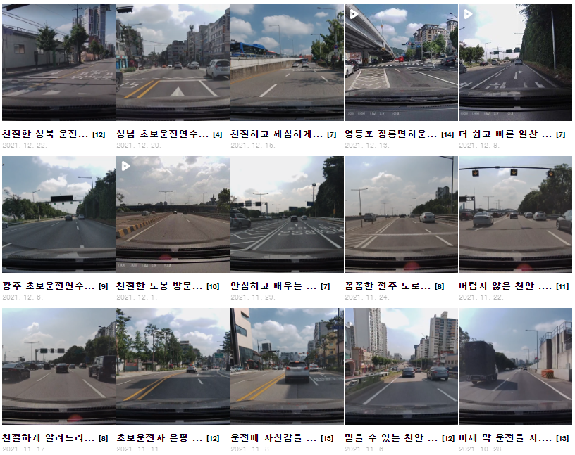
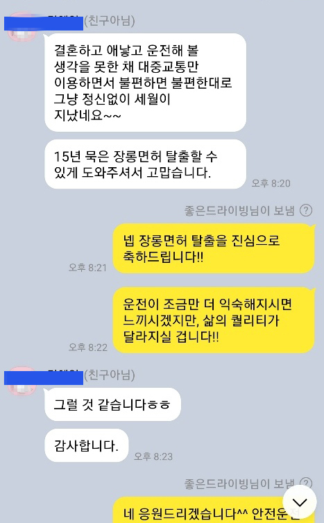
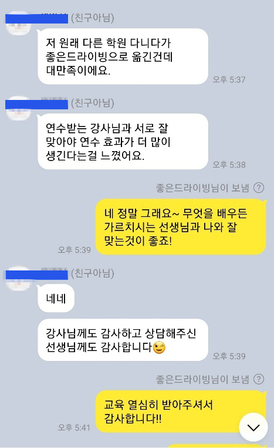
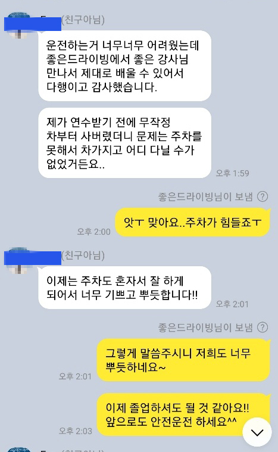
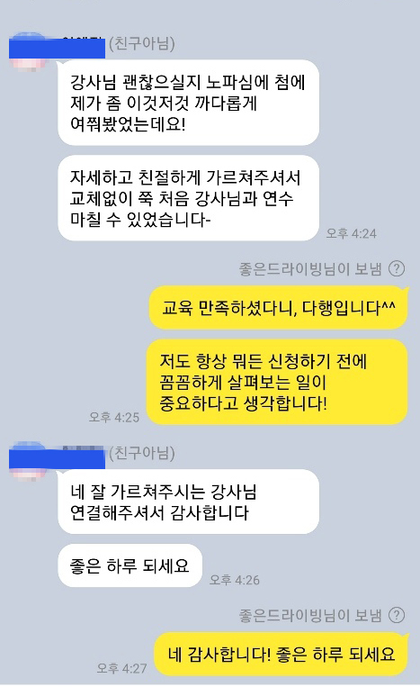
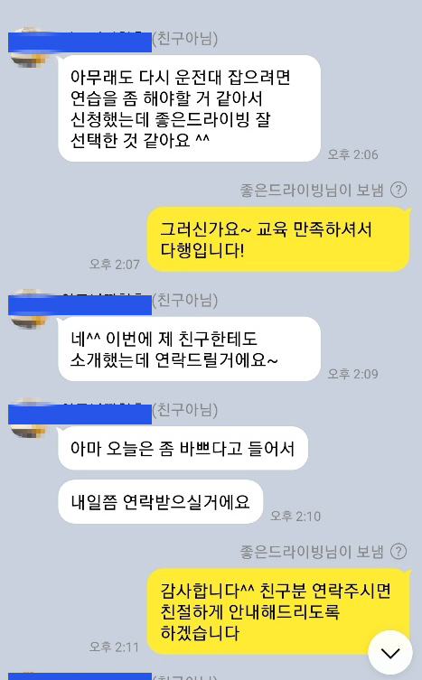
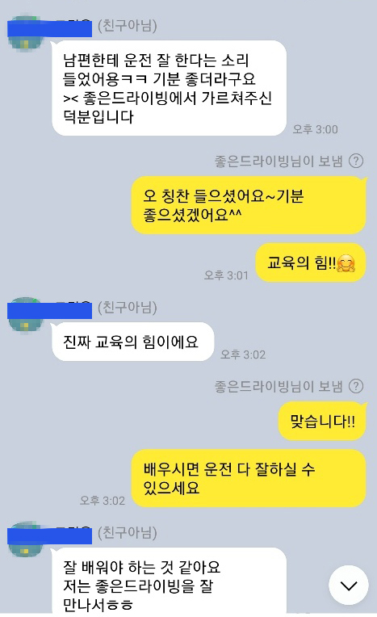

전국 각지 다양한 코스진행

고객카톡 후기 인증
그 동안 장롱탈출스타를 통해 교육 받으셨던 고객님들께서 보내주신 후기입니다.






이런게 궁금해요! 🙂
많은 고객님들께서 질문주셨던 내용입니다.
연수 일정과 강사 배정이 확정된 뒤 안내에 따라 결제합니다. 일반적으로 연수 첫날 안내된 방식으로 입금하며, 정확한 결제 방법은 상담 시 확인해 주세요.
서울, 경기, 인천, 대전, 전주, 광주, 충남, 충북, 대구, 부산, 세종, 강원도 강릉, 전북 군산 등 주요 지역에서 연수를 진행합니다.
교육 중 불편사항이나 강사와의 문제가 발생하면 고객센터로 바로 연락해 주세요. 상황을 확인한 뒤 가능한 범위에서 강사 변경이나 일정 조정을 도와드립니다.
방문 운전연수 방식으로 진행되므로 고객님과 협의한 장소에서 교육을 시작합니다. 집, 직장 등 실제 운전 동선과 가까운 곳으로 조율할 수 있습니다.
면허 취득 단계의 교육은 지역과 강사 배정 상황에 따라 가능 여부가 달라질 수 있습니다. 기능시험 합격 여부와 필요한 교육 내용을 상담 시 알려주세요.
가능합니다. 평일뿐 아니라 주말에도 일정 조율이 가능하며, 주말반은 토요일 2회·일요일 2회 기준의 2주 완성 과정으로도 진행할 수 있습니다.
불가피하게 일정 변경이 필요한 경우 담당 강사 및 고객센터와 협의해 보강 또는 일정 변경을 진행합니다. 변경 가능 여부는 강사 일정에 따라 달라질 수 있습니다.
가벼운 비 등은 실제 도로 상황 교육에 도움이 될 수 있지만 폭우, 폭설 등 안전에 영향을 줄 정도의 기상 상황에서는 일정이 변경될 수 있습니다.
교육 차량의 차종과 운영비, 보험 조건 등이 달라질 수 있어 학원차 SUV/RV는 승용차와 교육비 차이가 있습니다.
특수 차종이나 수동 차량은 지역별 강사와 차량 여건에 따라 가능 여부가 달라집니다. 원하는 차종을 상담 시 먼저 알려주세요.
가능합니다. 출퇴근길, 학교, 마트, 시내도로, 주차장, 간선도로 등 실제 운전하게 될 코스를 중심으로 요청할 수 있습니다.
교육 시간과 이동 동선에 문제가 없다면 시작 장소와 종료 장소를 다르게 협의할 수 있습니다.
희망 일정에 최대한 맞춰드리지만 지역별 강사 배정과 기존 예약에 따라 일정 조정이 필요할 수 있습니다.
장롱탈출스타은 자동차 운전연수를 중심으로 운영합니다. 오토바이 연수는 별도 상담을 통해 가능 여부를 확인해 주세요.
강사 일정이 가능한 경우 단기간 집중 교육도 상담할 수 있습니다. 가능한 시간대와 지역을 알려주시면 일정 확인 후 안내드립니다.
교육 차량 및 보험 가입 조건에 따라 처리하며, 사고 발생 시 즉시 안전을 확보한 뒤 강사와 고객센터 안내에 따라 보험 처리 절차를 진행합니다.